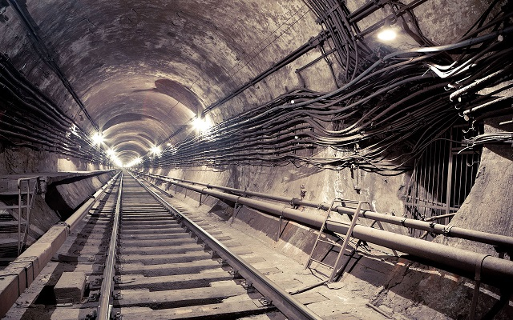

THE 4 STEPS TO
SELF-ACTUALIZATION THROUGH PUSHING PEOPLE IN FRONT OF TRAINS
A Pamphlet Sometimes Found in the NYC Subway
by Alan Ryker

If you’re reading this, then you probably recently pushed someone in front of a train. Maybe the first shove was over an everyday argument in the NYC subway. Maybe someone jostled you too hard and looked at you too long. Maybe some bum wouldn’t stop asking you for change. The point is, if you’re reading this, then the body hit the tracks and the train hit the body and you heard it, the voice of the subway. You couldn’t understand it, but you know that if you listen long enough, you will, and it will whisper the answers to the questions you can’t put into words.
Step 1 — Ride the Subway
You need to ride the subway. This may seem obvious, but there will be times when you’re late and you’ll want to take a cab. There will be times when you’ll want to walk, to enjoy the sunshine and the breeze and the moving, surface world. Dedication is what will separate you from the clueless masses you shove over the edge. The many miles you owe your quest will be remunerated in the dank labyrinthine tunnels of the subway, the arteries that pump people through the City’s abysmal heart, the tributaries that feed a black, unfathomable pool in whose depths your answers swim, silent and breathless.
Step 2 — Develop Patience
The most important quality of the self-actualized pusher is not strength, or speed, or even intelligence. The most important quality for the aspiring pusher to cultivate is patience.
Every day since you first heard the voice, as you look out of windows high in the air, you can hear the pulse of the arteries under the City’s skin. They course near the surface, but also run much deeper, and even from skyscraper heights you can feel the pull. The City calls to you, and you imagine jumping from the top floor, smashing through the asphalt below, plunging into the tunnels, through the known upper levels and down into the wet burrows which appear on no maps or blueprints, which seem to have bored themselves out of the rock and soil. You feel the pull of the vortex inside yourself, a Charybdian whirlpool that threatens to swallow you from the inside out during long, pointless days and nights.
Every day you survey the crowds underground, and you understand why the City chose to speak to you. The herds are oblivious. With no hesitation they turn their backs to thousands of strangers every day. The don’t realize that beasts still hunt among them, that the crowd itself is a beast, a living creature with its own consciousness, a brutal force that can be unleashed at any moment, that you can unleash at any moment. They don’t see that the tunnels are gaping jaws.
Your natural desire is to stride down the platform, grabbing and tossing people over the edge as fast as you can lift them. Not knowing which will reveal your life’s purpose, you want to plow them all over. The voice of the City, the stupidity of the crowds, it breaks some pushers. The constant hum and drone can make you reckless. Some shove one or two victims and get caught and go to jail forever and never learn what the voices have to tell them. They sit in small concrete cells listening to the endless murmuring.
This is why patience is the most important trait of a pusher on his way to self-actualization.
Wait. Wait for rush hour. Wait for problems up the line that have trains running express past your station. Wait until the crowd pours down the stairs like water, until the natural fluid desire of the human deluge is to flow over the edge of the platform, until people balance precariously, toes over the yellow line, and you can feel the press behind you even when they don’t touch you, can feel the potential energy that one person tripping on the bottom step and falling into the crowd could release, bursting the flood gates and sending dozens onto the track. When the conditions are like this, you’ll need only nudge, your hands innocently in your pockets, to send someone pinwheeling, twisting and flailing onto the tracks. They’ll try to swim back to solid concrete, slapping the air with splayed fingertips like shattered oars, gyrating outstretched arms like propellers.
Depending on your timing, they might hit the tracks a split second before metal wheels on metal rails sliced them into neat segments, or they might never land, instead splashing across the front car. But if you cultivate patience, no one will ever have time to stand and run back to the platform, to clamber and climb and be pulled to safety. This is grace. Even if you don’t play an instrument and can’t dance, you’ll develop a precise rhythm. Your subtle movements in the subway will be your dance.
Step 3 — Choose Your Victim
Don’t shove children. Not out of sympathy for their age, the tacit belief many hold that their lives are more valuable because of the number of years they have ahead of them, but because they travel in packs. They are temptingly vulnerable, off-balance from huge book bags, displaying their courage by nonchalantly standing too near the edge, so tiny they could be tossed about like toy boats on a windy day. You could send them over in droves.
And even more than the adults, they are unaware of the world around them. They walk into people, suddenly looking up in surprise as if they hadn’t noticed that the towering, cloth-covered walls are grownups.
But they are herd animals, and like a shark, your movements will appear graceful until contrasted against the silver, unified flight of these fragile fish.
A mother holding a child will be even more tempting. Can you imagine? Can you imagine if the conditions were all right, and you could inconspicuously turn your wide shoulders and nudge her over the edge? Can you imagine her only having the time to turn and look at you for a moment, her eyes huge and white and begging you to reach out and save her and her child, because you so easily could? God, can you imagine? Can you imagine how the City would reward this sacrifice? Can’t you just taste the sweetness?
You’ll almost certainly never taste it. Mothers are too cautious. Some maternal instinct allows them to sense the appetite of the void before them. They can’t jostle for position to make it to the front of a moving pack, yet they’ll stay back, risk missing their train to maintain a safe distance from the hungry flow of the black river.
Small men can make good victims. Be cautious, though. Small men can be wiry and fast, and you can’t risk a struggle. A struggle will call attention to you. But small men can be good.
A briefcase is good, as it reduces them to one free hand. They almost never drop their briefcases, but clutch them tight as lifelines. Winter is good, when large coats conceal your already small movements, when a crowd pressed together becomes heads bobbing on a sea of camel-hair and puffed down. Rain is good, when the ground is slippery with water, the large yellow studs on the metal lip of the platform doing nothing to stop a man in slick business shoes from slip-sliding feet first over the side and being sliced apart.
Small men can be good.
Step 4 — Escape
You’ve done everything right. You hunted the subway for weeks, forsaking sunny skies and cool breezes, pressing yourself into the stinking crowd until you stink too. You waited so patiently for just the right moment, so that what was required of you could barely be called a nudge. You chose the perfect victim, some oblivious businessman talking into his phone, too engrossed to hear even the roared demands of your dark god, too engrossed to even look back at you, to even know he died.
After he hits, during the moment the silent crowd requires for the reality of the death they’ve just witness to wash over them, you listen. In the rush of wind and shriek of metal on metal and flesh offering no resistance but parting for you as the Red Sea, you wait for your god’s words. You feel them in your chest, in the thrum and rumble of the passing train, but you can’t interpret them. Still, you know that if you tilt your head the right way, stand in the right place, shove the right person, you’ll hear clearly and understand.
So your work isn’t done yet. You must escape to hunt another day. This requires practice, talent, and a bit of luck. This is what separates the successful pusher from the incarcerated madman: once the crowd releases its long intake of breath in shrieks and chaos erupts, you need to improvise.
Sometimes you’ll be able to walk silently away, twisting and flowing with the milling maelstrom. Sometimes you’ll have to make your way to the stairs despite perpendicular, even contrary movement, downward movement trying to pull you under. Sometimes, you can make your way through the mob by screaming that, dear God, someone has fallen to the tracks.
No matter how well you planned your push, even if no one sees you nudge your victim over the edge, no pusher can afford to be trapped twice. If, like a serpent, the crowd weaves its coils tightly around you and you can’t inconspicuously escape and you stay through the police interview, no matter how blameless you appear, your name will be entered into a database. The next time this happens, you will be cross-referenced and you will never discover what you search for.
Conclusion — What Might Await Us: A Thought Experiment
Because meditating on success brings success.
It’s a bright summer day outside the tunnels. Years have passed, but your faith has never wavered. This day, you offer the roaring metal gods a sacrifice of a tall, gangly woman, a pale spider of a woman, all limbs and knuckles and heavy, straight hair. She’s thin, less than half your weight. You could lift her with one hand and toss her into your deity’s cavernous, rail-toothed maw.
But you don’t, because that’s not what we do. The conditions are right. The crowd flows forward, restless and sweaty from delays and the heat. She holds up a huge plastic bag with both hands as she prepares to fight her way onto the approaching train. You feel an electric surge in your heart as you always do, wondering if this will finally be the one, and just a little early you press your knee into the back of her knee, your hips cupping her bony buttocks, your muscular thigh pressed against her twiggy one, and you lift with your leg and thrust with your hips, your hands innocently, blamelessly in your pockets.
But the thin woman spins so fast you almost don’t see her move. One moment she’s facing the tunnel, the next she’s twisted towards you, is pulling you by your shirt, you with your hands still in your pockets. She’s dropped her bag and hangs over the void, pushing on the edge of the platform with her long legs, desperately yanking with her long arms. But you were standing on one foot when she grabbed you, a leg still slightly lifted, and the most important condition of a perfect push, the forward energy a crowd generates that no one person seems to control, the energy that we only imagine we control, is pressing you over.
You feel the hands of those around you search for purchase on your sweaty arms, grabbing at your thin shirt. But at the same time they try and fail to grab you with their hands, they push you with their chests and hips and thighs, and the thin woman extends her legs and pulls hard just as you finally rip your hands from your pockets, and you both tumble out into the tunnel.
With resistance gone, now that it’s too late and you both float weightless in the black water of the river of the gods, she finally succeeds in pulling herself to you. You put your arms around her in return, holding her close, looking into her eyes.
When you give up the fight for solid ground, you discover what you’ve searched for all these years. You see that your desire for meaning has been its antithesis. Drifting free of desire and the anchor of the future, you smile to think you’ve given this same moment to so many others.
But that’s pride. You know you are a tiny drop in the human flood, and like a drop of water you had no choice in pressing your fellows over the edge, and it’s no one’s fault that you are now carried over after them. And like a drop of water in a river, there is no drop. There is no you. There is only the eternal, flowing energy of humanity.
If you’d passed her on the street you would have barely noticed her, but levitating above the tracks, staring into her eyes, feeling her pull herself against you as if she were trying to overcome surface tension and become one with your body, you drown in her beauty. Her life and the end of her life are painfully exquisite. Moments ago, you didn’t know her. Now you know her completely. Now you’re sharing the most intimate moment possible with her, and you realize that she is the end, you all are, and you’re glad to be meeting your end with her. It doesn’t matter whether her pulling you in was the desperate instinct of a drowning swimmer, a last act of perfect vengeance, or the climax of her own design (perhaps she’s also following The 4 Steps). Regardless, it is destiny. So much emotion wells in her eyes, and you know she feels the same joy. Returning her embrace, you float, and you never touch bottom.
©2011 Alan Ryker